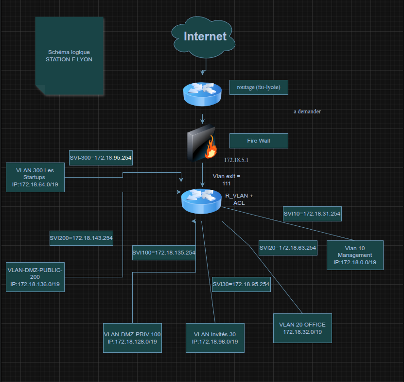
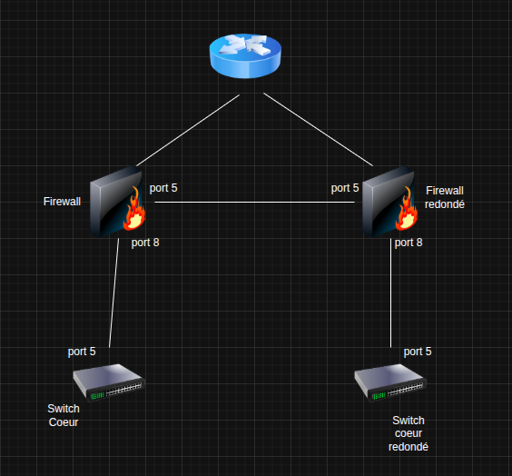

DELAFOSSE Baptiste

Palaiseau, 91120
Palaiseau, 91120
On est Curiosity-IT, une ESN chargée de la conception de l'infrastructure de l'annexe de Station F situé à Lyon
De Septembre et Novembre, on a crée et administré une infrastructure réseau pour l'implémentation fictive de Station F à Lyon.
A partir de l'infrastructure réseau de Station F du premier projet, on a donc rajouter des périphériques (serveur, switch, routeur, liens) pour assurer la continuité de services et eviter une eventuelle panne On a donc developper une solution PCA (Plan de Contiuité d'Activité)
Lors de mon deuxieme stage, j'ai du m'organiser sur une semaine avec mon coéquipier afin de mettre a niveau le pc badge de l'accueil qui était un client applicatif de la base de donnée